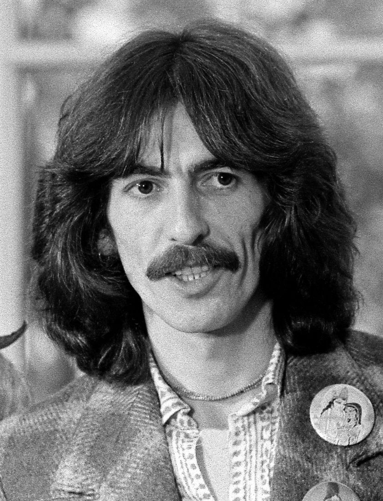

1943 · Liverpool — 2001 · Los Angeles
“All things must pass
None of life's strings can last
So, I must be on my way…”
Every record in order, with the musicians on each one, how it was received then and now, what the other Beatles thought, and all the songs he gave to friends.
Walk through the garden
The youngest Beatle wrote “Something”, “Here Comes the Sun” and “While My Guitar Gently Weeps”, brought the sitar into pop, and after 1970 released some of the most heartfelt music any former Beatle made.
He also organised rock's first big charity concert, produced records for his friends, founded HandMade Films to fund Monty Python's Life of Brian, restored a Victorian garden at Friar Park, and became the slide guitarist everyone wanted on their records, often under a made-up name. This site follows the music in order, one record at a time.
Part one
Fourteen albums from 1968 to 2002. Tap a sleeve to open it.
Part two
Nelson (later Spike) Wilbury with Bob Dylan, Jeff Lynne, Tom Petty and Roy Orbison.
Part three
Usually two songs an album at most, and every one of them earned.
Part four
Songs he wrote or co-wrote for friends, records he produced, and the slide guitar he lent out, often under a fake name to get round record-label contracts.
The main sources are the George Harrison discography on Wikipedia (with its citations) and the individual song articles. It is a selection: he played on even more sessions than this.
Part five
Only freely licensed and public-domain photos from Wikimedia Commons are used, each with its credit.